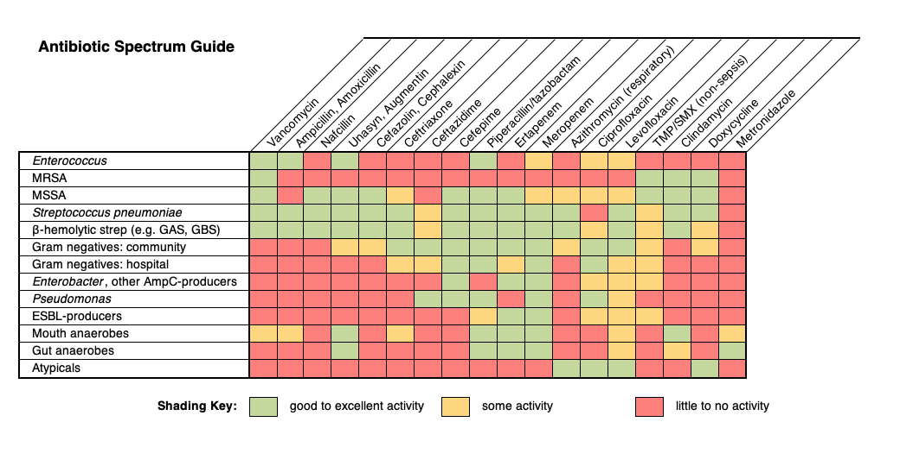

Pediatric empiric therapy
Antibiotic Stewardship and Spectrum Guide
Best Practices for Antibiotic Use:
- Avoid using antibiotics when bacterial infection is unlikely. Learn to recognize colonization and contamination in cultures and other etiologies of false positive diagnostic tests. Choose carefully when to send a diagnostic test for infection.
- Obtain appropriate cultures and other diagnostic testing when indicated.
- Select empiric antimicrobial therapy based on likely pathogens, using the BCH Empiric Antimicrobial Therapy Guidelines and hospital-specific antibiogram for guidance.
- Determine appropriate dose based on site and severity of infection, using BCH Empiric Antimicrobial Therapy Guidelines and Dosing Guidelines, or Lexi-Comp.
- Within 48-72 hours, re-evaluate therapy to target the likely diagnosis, and when available, based on culture and susceptibility data.
- If a specific source or pathogen is not identified it is recommended to de-escalate therapy in most circumstances
- Discontinue antimicrobials when an indication no longer exists (e.g. vancomycin if cultures do not show MRSA).
- Use the narrowest regimen likely to be effective.
- Switch from IV to enteral therapy as soon as it is clinically appropriate.
- Treat with the shortest duration of therapy that is likely to be effective for the presumed or proven infection.
- Contact the Antimicrobial Stewardship team at your patient’s campus for advice at any point you feel you may need more help.
Spectrum of Activity
Below are resources that may be helpful in gauging the spectrum of activity (how broad or narrow an antibiotic is) and figuring out what categories of bacteria might be treated by different antibiotic choices.

This is a simplified table that shows the general pattern of activity of different antibiotics against major categories of bacteria. For more details, see the antibiograms linked above.
The following table may be helpful when choosing between different antibiotic options, and is based on the 2019 World Health Organization AWaRe (Access, Watch, Reserve) classification of antibiotics for evaluation and monitoring of use. See second row of table below for more information about what these terms mean.
Access - Narrow | Access - Moderate* | Watch | Watch - Broadest** | Reserve |
Antibiotics that have activity against a wide range of commonly encountered susceptible pathogens while also showing lower resistance potential than antibiotics in other groups. | Antibiotics with higher resistance potential. These medications should be prioritized as key targets for antibiotic stewardship | Antibiotics that should be reserved for treatment of confirmed or suspected infections with multi-drug resistant organisms | ||
Amoxicillin Ampicillin Cephalexin Cefazolin Dicloxacilllin Nafcillin Oxacillin Penicillin | Amoxicillin-clavulanate Ampicillin-sulbactam Clindamycin Gentamicin Trimethoprim-Sulfamethoxazole Doxycycline | Azithromycin Cefuroxime Cefdinir Cefixime Ceftriaxone Ceftazidime Ciprofloxacin Levofloxacin | Piperacillin- tazobactam Cefepime Ertapenem Meropenem Tobramycin Vancomycin | Aztreonam Ceftaroline Daptomycin Linezolid Ceftazidime-avibactam Ceftolozane-tazobactam |
*This category has been added to signal those antibiotics that are still considered relatively broad in spectrum within the “Access” group.
**This category has been added to signal those antibiotics with the broadest spectrum of activity within the “Watch” group.